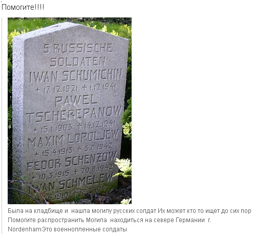

|
Военнопленные находились в составе рабочей команды Nordenham-Reichsbahn 1240.
1. ШУМИХИН Иван Федорович, родился в 1921 г. в дер. Б. Козловка Шабалинского р-на Кировской области. Рядовой, 711 стрелковый полк 215 моторизованной дивизии. Погиб в декабре 1941 г. В Книге памяти Кировской области увековечен как пропавший без вести в декабре 1941 г.
2. ЧЕРЕПАНОВ Павел Федорович, родился в 1903 г. в г. Пласт Челябинской области. Рядовой, 959 стрелковый полк 309 стрелковой дивизии. Погиб 15 декабря 1941 г. В Книге памяти Челябинской области увековечен как пропавший без вести в декабре 1941 г.
3. ЛОПОЛЕВ (возможно ЛОПЫРЕВ) Максим Иванович, родился в 1913 г. в дер. Сергиевка Шацкого р-на Рязанской области. Рядовой. Призван Химкинским РВК Московской области 23.06.1941 г. Погиб 3 августа 1942 г. В Книгах памяти Московской области и г. Москвы увековечен как пропавший без вести в сентябре 1941 г.
4. ШЕНЦОВ (правильно – ШЕВЦОВ) Федор Порфирович (в документах военнопленного – Порфирьевич), родился в 1915 г. в с. Николо-Александровка Арзгирского р-на Ставропольского края. Призван Буденновским РВК в июне 1940 г. Рядовой, 529 мотострелковый полк 163 моторизованной дивизии. Погиб 20 августа 1942 г. В Книге памяти Ставропольского края увековечен как пропавший без вести в декабре 1941 г.
5. ШМЕЛЕВ Иван Васильевич, родился в 1910 г. в дер. Подсухино Шаховского р-на Московской области. Рядовой, 399 стрелковый полк 111 стрелковой дивизии. Погиб 18 марта 1941 г. В Книге памяти Московской области не увековечен.
|